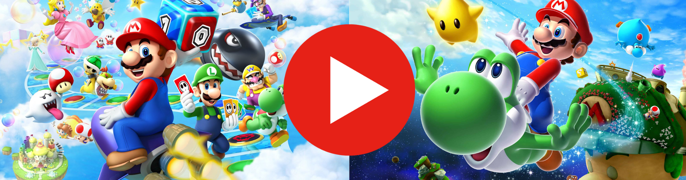

Vídeos do Super Mario
Super Mario 64 (1996)
O Super Mario 64 foi lançado com o console Nintendo 64 e foi considerado por muitos especialistas o melhor game de todos os tempos. Pela primeira vez, o Mario recebeu uma aventura totalmente em 3 dimensões com gráficos fantásticos para a época. O jogo é muito divertido, tem muitos segredos e garante muitas horas de diversão.
Super Mario Bros. (1985)
O Super Mario Bros. é o primeiro jogo do Mario que surgiu no console NES (Nintendinho). O jogo vendeu milhões de cópias e se tornou uma lenda na história dos videogames. Foi o primeiro jogo de plataforma que ainda hoje é adorado por todo mundo por ser super divertido e simples.
Super Mario World (1990)
Depois do grande sucesso do Super Mario Bros, o Mario surge no console Super Nintendo em mais um game incrível. Desta vez, o Mario vem acompanhado do seu amigo Yoshi e, juntos, eles partem em uma aventura para salvar a Princesa Peach que foi (mais uma vez) raptada pelo vilão Bowser.
Super Mario Bros. 3 (1988)
Este é o terceiro e último título do Super Mario do console NES. O Mario vai em busca da Princesa Peach no Reino dos Cogumelos, encarando inimigos mais perigosos. Mas, desta vez, o encanador conta com novos poderes especiais. Este é um game muito completo em que o jogador pode escolher o seu caminho no mapa.
Super Mario Bros. 2 (1986)
O Super Mario Bros. 2 é totalmente diferente da primeira e da terceira versões do jogo do console NES. Aqui, o Mario não derrota os inimigos pulando em cima deles, mas atirando vegetais. Além disso, é possível jogar com outras personagens como Luigi, Princesa Peach e Toad.
Super Mario RPG (1996)
Mario RPG é uma versão totalmente diferente das clássicas plataformas que estamos acostumados. Neste jogo, o Mario enfrenta os seus inimigos em combates por turnos, como acontece nos games RPG's. Este game foi lançado no Super Nintendo e é uma experiência bem original em um jogo do Super Mario.
Super Mario World 2 (1995)
O Yoshi é o protagonista principal do segundo game do Super Mario World do Super Nintendo. Use as habilidades do Yoshi para transportar o Mario nas fases com plataformas cheias de inimigos e obstáculos perigosos. O jogo recebeu muitos elogios pelo seu grafismo original, como se tudo fosse pintado à mão.
Super Mario Kart (1992)
O Super Nintendo surpreendeu a todos quando lançou este super game de carros. Aqui, a turma do Mario se enfrenta em corridas de karts em cenários do Super Mario World. Vale tudo para vencer. Você pode pegar itens para usar contra os seus rivais ou usar atalhos para ultrapassá-los.
Paper Mario (2001)
O mundo do Mario se transformou em um lugar onde tudo é feito de papel. Explore esse novo mundo e fale com várias personagens para saber onde foi parar a Princesa Peach. O Mario vai encontrar muitos amigos que vão ajudá-lo a completar essa aventura do Nintendo 64.
Mario Kart 64 (1996)
O Mario Kart regressou ao Nintendo 64 com gráficos em 3 dimensões. Você pode escolher uma personagem do universo Mario para entrar em corridas super intensas, mas muito divertidas. Pegue os itens como as bananas e os cogumelos para usar contra os seus oponentes e ganhar vantagem.
Super Mario Maker (2015)
Neste editor do Mario você pode construir as fases e depois jogar. Já imaginou criar a fase mais difícil de sempre? Coloque os inimigos, as plataformas e outros itens onde quiser para montar tudo do seu jeito. Use a sua imaginação para fazer fases radicais.
Super Mario All-Stars (1993)
Os jogos do Super Mario no NES foram tão populares que voltaram a sair no Super Nintendo. Neste game, você pode jogar o raríssimo Super Mario The Lost Levels (Super Mario Bros. 2 na versão japonesa). Também tem o Super Mario Bros. 2 na versão americana, o Super Mario Bros. 1 e 3 e o Super Mario World do Super Nintendo.
O Super Mario 64 foi lançado com o console Nintendo 64 e foi considerado por muitos especialistas o melhor game de todos os tempos. Pela primeira vez, o Mario recebeu uma aventura totalmente em 3 dimensões com gráficos fantásticos para a época. O jogo é muito divertido, tem muitos segredos e garante muitas horas de diversão. O Super Mario Bros. é o primeiro jogo do Mario que surgiu no console NES (Nintendinho). O jogo vendeu milhões de cópias e se tornou uma lenda na história dos videogames. Foi o primeiro jogo de plataforma que ainda hoje é adorado por todo mundo por ser super divertido e simples. Depois do grande sucesso do Super Mario Bros, o Mario surge no console Super Nintendo em mais um game incrível. Desta vez, o Mario vem acompanhado do seu amigo Yoshi e, juntos, eles partem em uma aventura para salvar a Princesa Peach que foi (mais uma vez) raptada pelo vilão Bowser. Este é o terceiro e último título do Super Mario do console NES. O Mario vai em busca da Princesa Peach no Reino dos Cogumelos, encarando inimigos mais perigosos. Mas, desta vez, o encanador conta com novos poderes especiais. Este é um game muito completo em que o jogador pode escolher o seu caminho no mapa. O Mario Kart regressou ao Nintendo 64 com gráficos em 3 dimensões. Você pode escolher uma personagem do universo Mario para entrar em corridas super intensas, mas muito divertidas. Pegue os itens como as bananas e os cogumelos para usar contra os seus oponentes e ganhar vantagem. Você pode construir as fases e depois jogar. Já imaginou criar a fase mais difícil de sempre? Coloque os inimigos, as plataformas e outros itens onde quiser para montar tudo do seu jeito. Use a sua imaginação para fazer fases radicais. Os jogos do Super Mario no NES foram tão populares que voltaram a sair no Super Nintendo. Neste game, você pode jogar o raríssimo Super Mario The Lost Levels (Super Mario Bros. 2 na versão japonesa). Também tem o Super Mario Bros. 2 na versão americana, o Super Mario Bros. 1 e 3 e o Super Mario World do Super Nintendo.
Youtuber de Super Mario
Mario de Massinha de modelar
Luigi é Irmão do Mario?
Simulador de Super Mario
Super Mario: Novidades na E3
Jogo Fam Made do Super Mario
Nintendo Anuncia Mario Multiplayer